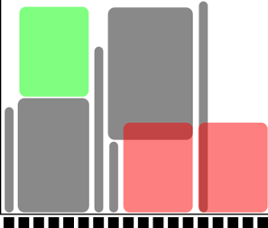

Using the compute nodes
Objectives
This is a short introduction in how to reach the compute nodes
Wednesday afternoon is wedded to this topic!
Instructor note
Approx timing: 13.30-14.30 (10 min break)
Theory
Hands-on
Attention
For now, this course, we use the material on this present page.
A SLURM introduction can otherwise be found here: http://docs.uppmax.uu.se/cluster_guides/slurm/
Note
project number:
naiss2024-22-49
The compute nodes
When you are logged in, you are on a login node. There are two types of nodes:
Type |
Purpose |
|---|---|
Login node |
Start jobs for worker nodes, do easy things. |
Compute nodes |
Do hard calculations, either from scripts of an interactive session. |
![graph TB
Node1 -- interactive --> SubGraph2Flow
Node1 -- sbatch --> SubGraph2Flow
subgraph "Snowy"
SubGraph2Flow(calculation nodes)
end
thinlinc -- usr-sensXXX + 2FA + VPN ----> SubGraph1Flow
terminal/thinlinc -- usr --> Node1
terminal -- usr-sensXXX + 2FA + VPN ----> SubGraph1Flow
Node1 -- usr-sensXXX + 2FA + no VPN ----> SubGraph1Flow
subgraph "Bianca"
SubGraph1Flow(Bianca login) -- usr+passwd --> private(private cluster)
private -- interactive --> calcB(calculation nodes)
private -- sbatch --> calcB
end
subgraph "Rackham"
Node1[Login] -- interactive --> Node2[calculation nodes]
Node1 -- sbatch --> Node2
end](_images/mermaid-046a34d4a7c3df57cf3899fe2f612f27a718b9e9.png)
Slurm, sbatch, the job queue
Problem: 1000 users, 300 nodes, 5000 cores
We need a queue:
Slurm is a job scheduler
You define jobs to be run on the compute nodes and therefore sent to the queue.
Jobs
Job = what happens during booked time
Described in
a script file or
the command-line (priority over script)
The definitions of a job:
Slurm parameters (flags)
Load software modules
(Navigate in file system)
Run program(s)
(Collect output)
… and more
“Some keywords”
A program may run serially and then needs only ONE compute thread, which will occupy 1 core, which is a physical unit of the CPU on the node.
You should most often just book 1 core. If you require more than 7 GB you can allocate more cores and you will get multiples of 7 GB.
A program may run in parallel and then needs either several threads or several tasks, both occupying several cores.
If you need all 128 GB RAM (actually 112) or all 16 cores for your job, book a complete node.
Slurm parameters
1 mandatory setting for jobs:
Which compute project? (
-A)
3 settings you really should set:
Type of queue or partition? (
-p)corefor most jobs and default!nodefor larger jobsfor short development jobs and tests:
devcore,devel)
How many cores? (
-n)up to 16 for core job
How long at most? (
-t)
If in doubt:
-p core-n 1-t 10-00:00:00
The queue
How does the queue work?
Let’s look graphically at jobs presently running.

x-axis: cores, one thread per core
y-axis: time
We see some holes where we may fit jobs already!
Let’s see which type of jobs that can fit!

4 one-core jobs can run immediately (or a 4-core wide job).
The jobs are too long to fit at core number 9-13.

A five-core job has to wait.
Too long to fit in cores 9-13 and too wide to fit in the last cores.
Easiest to schedule single-threaded, short jobs
Tip
You don’t see the queue graphically, however.
But, overall:
short and narrow jobs will start fast
test and development jobs can get use of specific development nodes if they are shorter than 1 hour and uses up to two nodes.
waste of resources unless you have a parallel program or need all the memory, e.g. 128 GB per node
Core-hours
Remember that you are charged CPU-hours according to booked #cores x hours
Example 1: 60 hours with 2 cores = 120 CPU-hours
Example 2: 12 hours with a full node = 192 hours
Waste of resources unless you have a parallel program using all cores or need all the memory, e.g. 128 GB per node
Choices
Work interactively with your data or develop or test
Run an Interactive session
$ interactive <flags> ...
If you don’t need any live interaction with your workflow/analysis/simulation
Send your job to the slurm job batch (sbatch)
$ sbatch <flags> <program>or$ sbatch <job script>

What kind of compute work are you doing?
Compute bound
you use mainly CPU power
does the software support threads or MPI?
Threads/openMP are rather often supported. Use several cores!
MPI (Message Passing Interface) allows for inter-node jobs but are seldom supported for bioinformatics software. You could use several nodes!
Memory bound
if the bottlenecks are allocating memory, copying/duplicating
use more cores up to 1 node, perhaps using a “fat” node.
“Slurm Cheat Sheet”
-Aproject number-twall time-nnumber of cores-Nnumber of nodes (can only be used if your code is parallelized with MPI)-ppartitioncoreis default and works for jobs narrower than 16 coresnodecan be used if you need the whole node and its memory
Walltime at the different clusters
Rackham: 10 days
Snowy: 30 days
Bianca: 10 days
Interactive jobs
Most work is most effective as submitted jobs, but e.g. development needs responsiveness
Interactive jobs are high-priority but limited in
-nand-tQuickly give you a job and logs you in to the compute node
Require same Slurm parameters as other jobs
Log in to compute node
$ interactive ...
Logout with
<Ctrl>-DorlogoutTo use an interactive node, in a terminal, type:
interactive -A [project name] -p core -n [number_of_cores] -t [session_duration]
For example:
interactive -A naiss2024-22-49 -p core -n 2 -t 8:0:0
This starts an interactive session using project naiss2024-22-49
that uses 2 cores and has a maximum duration of 8 hours.
Try interactive and run RStudio
We recommend using at least two cores for RStudio, and to get those resources, you must start an interactive job.
Type-Along
Use ThinLinc
Start interactive session on compute node (2 cores)
If you already have an interactive session going on use that.
If you don’t find it, do
$ squeuefind your session, ssh to it, like:
$ ssh r483If you have no ongoing session:
$ interactive -A naiss2024-22-49 -p devcore -n 2 -t 60:00
Once the interactive job has begun you need to load needed modules, even if you had loaded them before in the login node
You can check which node you are on?
$ hostnameAlso try:
$ srun hostnameThis will give several output lines resembling the number of cores you allocated.
How many in this case??
[bjornc@r483 ~]$Load an RStudio module and an R_packages module (if not loading R you will have to stick with R/3.6.0) and run “rstudio” from there.
$ ml R_packages/4.2.1$ ml RStudio/2022.07.1-554Start rstudio, keeping terminal active (
&)$ rstudio &Slow to start?
Depends on:
number of packages
if you save a lot of data in your RStudio workspace, to be read during start up.
Quit RStudio!
Log out from interactive session with
<Ctrl>-Dorlogoutorexit
Job scripts (batch)
Batch scripts can be written in any scripting language. We will use BASH
Make first line be
#!/bin/bashin the top lineIt is good practice to end the line with
-lto reload a fresh environment with no modules loaded.This makes you sure that you don’t enable other software or versions that may interfere with what you want to do in the job.
Before the job content, add the batch flags starting the lines with the keyword
#SBATCH, like:#SBATCH -t 2:00:00#SBATCH -p core#SBATCH -n 3
#will be ignored bybashand can run as an ordinary bash scriptif running the script with the command
sbatch <script>the#SBATCHlines will be interpreted as slurm flags
Try batch job
Type-Along
Write a bash script called
jobscript.shYou can be in your
~folder
To make it more efficient Copy-paste the code below.
A simple job script template
#!/bin/bash
#SBATCH -A naiss2024-22-49 # Project ID
#SBATCH -p devcore # Asking for cores (for test jobs and as opposed to multiple nodes)
#SBATCH -n 1 # Number of cores
#SBATCH -t 00:10:00 # Ten minutes
#SBATCH -J Template_script # Name of the job
# go to some directory
cd /proj/naiss2024-22-49/
pwd -P
# load software modules
module load bioinfo-tools
module list
# do something
echo Hello world!
Run it:
$ sbatch jobscript.sh
Tip
Do you need more resources?
Do you need more memory than 128 GB or GPU:s?
-C mem256GBallocate a fat node with 256 GB RAM-C mem512GBallocate a fat node with 512 GB RAM-C gpu-p nodemust be used when allocating these nodesGPU example asking for a node, using one GPU and 3 CPU cores. TIP: ask always for more than one hour!
interactive -A <proj> -n 3 -C gpu --gres=gpu:1 -t 01:10:00
Note
Some Limits
There is a job wall time limit of ten days (240 hours).
We restrict each user to at most 5000 running and waiting jobs in total.
Each project has a 30 days running allocation of CPU hours.
We do not forbid running jobs after the allocation is over-drafted
Instead allow to submit jobs with a very low queue priority, so that you may be able to run your jobs anyway, if a sufficient number of nodes happens to be free on the system.
Other Slurm tools
squeue— quick info about jobs in queuejobinfo— detailed info about jobsfinishedjobinfo— summary of finished jobsjobstats— efficiency of booked resourcesuse
eogto watch thepngoutput files
bianca_combined_jobinfo
“Slurm Cheat Sheet”
-Aproject number-twall time-nnumber of cores-Nnumber of nodes (can only be used if your code is parallelized with MPI)-ppartitioncoreis default and works for jobs narrower than 16 coresnodecan be used if you need the whole node and its memorymust be used when allocating the fat nodes, see below
-C mem256GBallocate a fat node with 256 GB RAM-C mem512GBallocate a fat node with 512 GB RAM-C gpu
Batch jobs
Two alternatives
sbatch <jobscript with all #SBATCH options>sbatch <options that will be prioritized over the options within the jobs script> <jobscript>can for instance be used if you just want to test with, for instance, fewer cores and shorter time
Example:
sbatch -t 60:00 -p devcore -n 2 job.sh
Interactive
interactive -A <project> <other options if not using default settings>load your modules when session starts
Exercises
“Why not always use an interactive session?”
Solution
Because it is an inefficient use of your core hours.
An interactive session means that you use a calculation node with low efficiency: only irregularly you will use such a node to its full capacity.
However, the number of core hours are registered as if the node is used at full capacity, as it is reserved to be used at that capacity.
“Which approach is best in the following use cases? Batch jobs or interactive sessions?”
Long jobs
Short jobs with interactive “run-time”/interactive user input
Short jobs without interactive “run-time”/interactive user input
Test/debugging/developing code
Playing with and plotting large data
“Answer”
batch
interactice
batch
interactive
interactive
Links
Exercise at home
Copy the code just further up!
Put it into a file named “jobtemplate.sh”
Make the file executable (chmod)
Submit the job:
$ sbatch jobtemplate.sh
Note the job id!
Check the queue:
$ squeue -u <username>
$ jobinfo -u <username>
When it’s done (rather fast), look for the output file (slurm-
.out):
$ ls -lrt slurm-*
Check the output file to see if it ran correctly
$ cat <filename>
More on Wednesday afternoon!
Keypoints
You are always in the login node unless you:
start an interactive session to do development or hands-on work
start a batch job to run jobs not needing any manual input
Slurm is a job scheduler
add flags to describe your job.